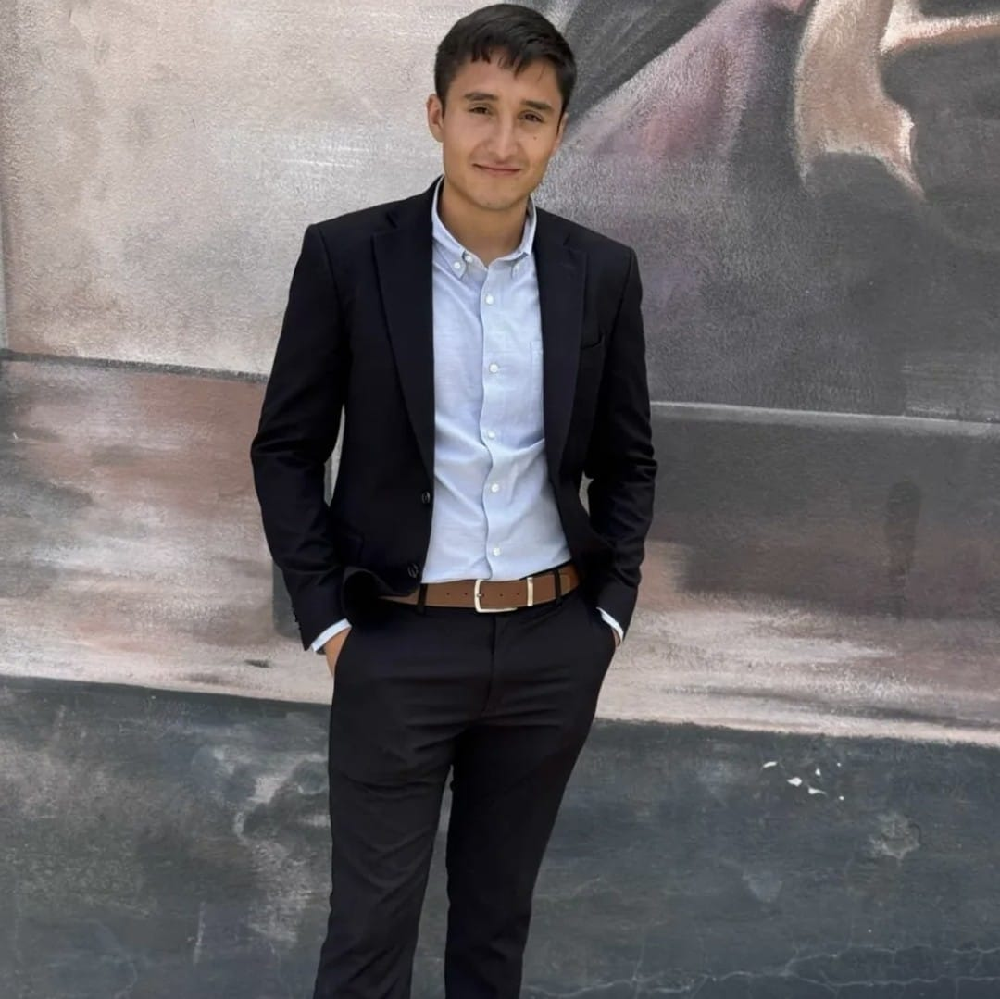
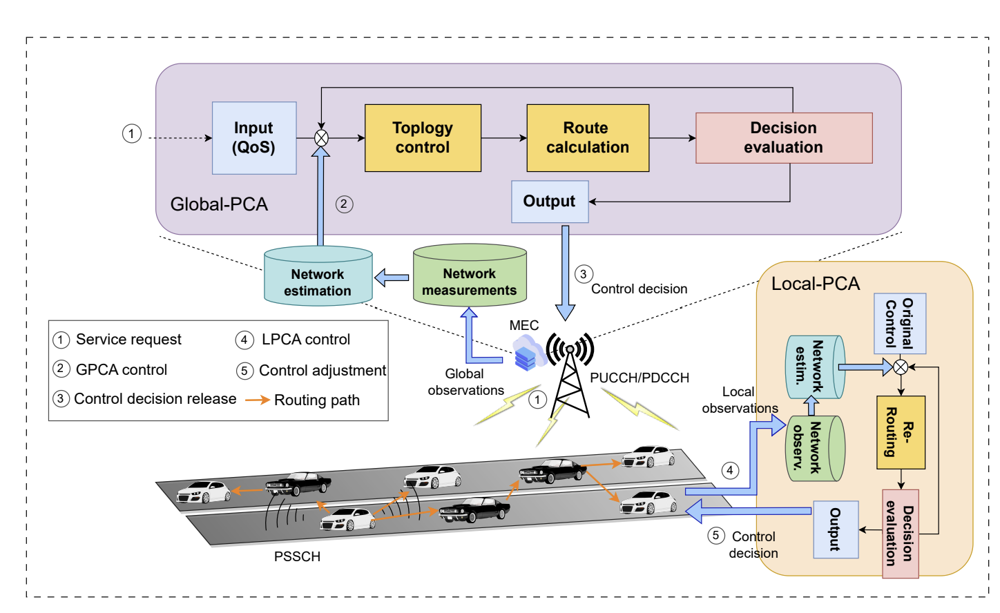
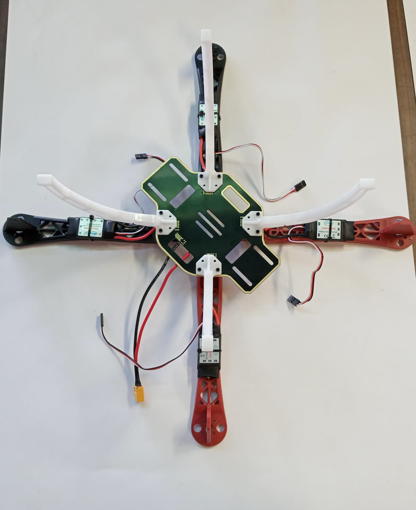
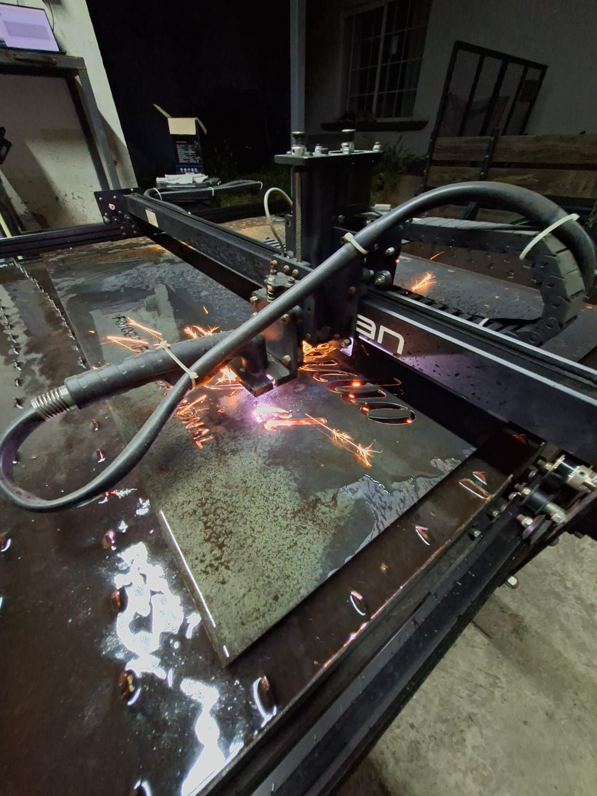
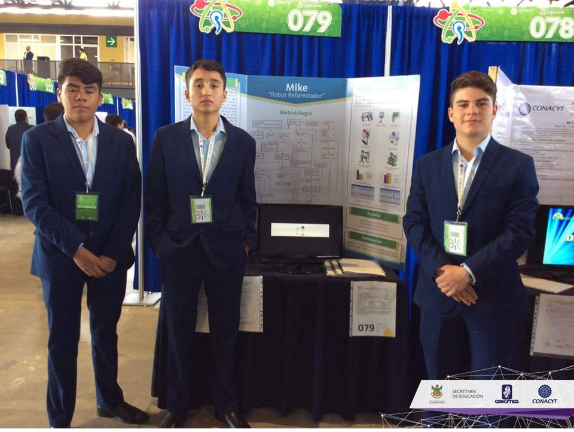
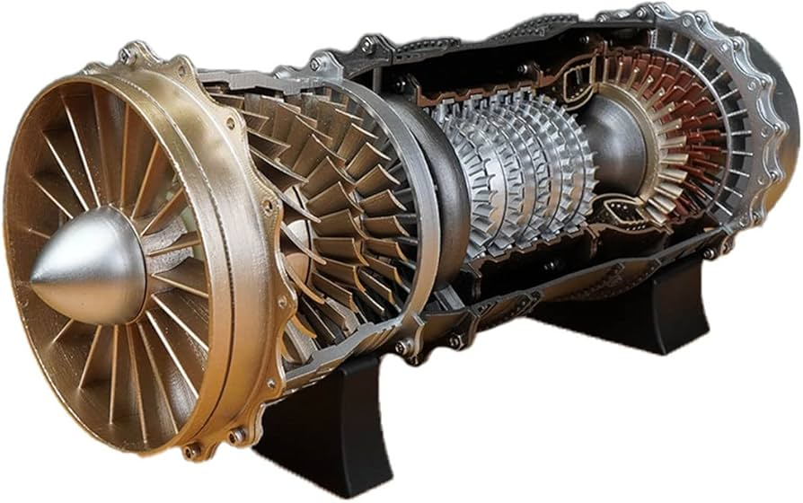
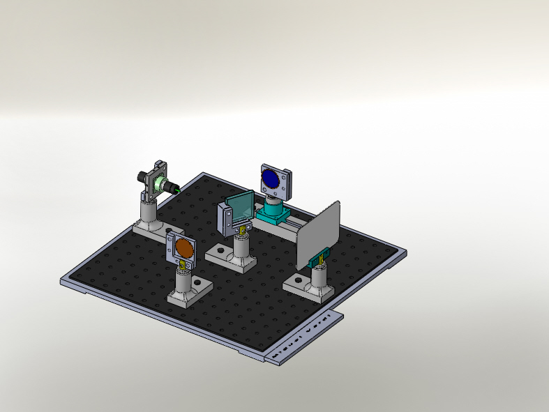
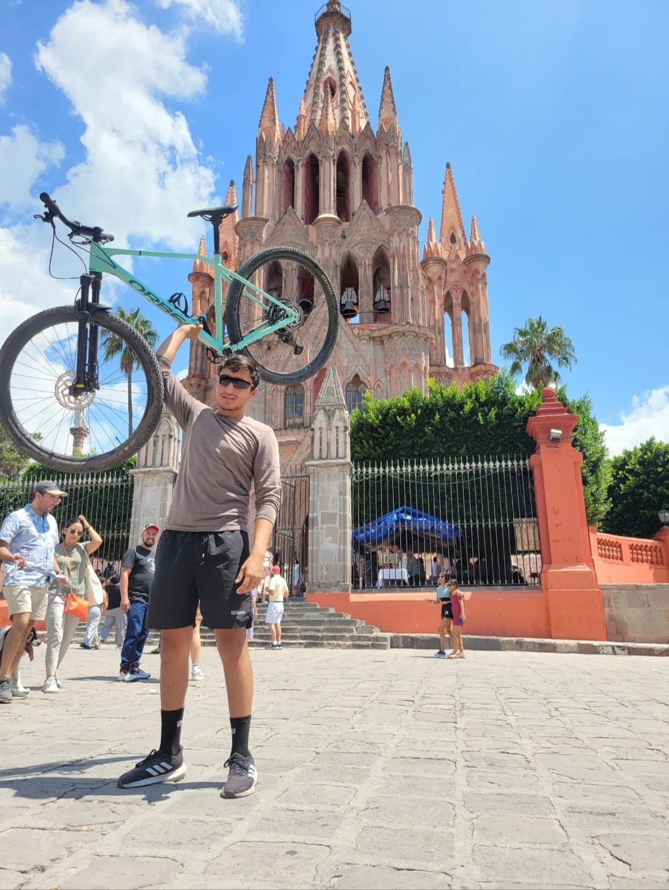

Seattle, WA / Robotics · Autonomous systems · Data
Miguel Ángel Verdi Reséndiz
I'm a physics engineer from Querétaro, México, now doing an MS in Technology Innovation (Robotics) at the University of Washington's Global Innovation Exchange as a Fulbright–García Robles Scholar.
I've worked on control and navigation for drones at UNAM, on routing protocols for connected vehicles at the University of Victoria, and spent the last two years keeping large Google Cloud data pipelines healthy at American Express and TCS. I like problems where the math, the code and the hardware all have to agree.
- Now
- MS Robotics, UW GIX — 2026–2028
- Status
- J-1, work authorized — no sponsorship required
- Open to
- Robotics, autonomy & data engineering internships

Selected work
Research and side projects, roughly newest first. Each one opens a longer write-up.

QoS-guaranteed clustering & routing for vehicular networks
A protocol that lets autonomous vehicles share sensor data over a fast-changing network. I implemented and ran the ns-3 / SUMO simulations with two PhD students in Prof. Lin Cai's lab.

Navigation observer from vector measurements and GPS
Observer design for UAV attitude and position estimation. Two years of building, flying and analysing the data alongside a PhD and a Master's student.

Corte Plasma CNC Querétaro
Small plasma-cutting business. Customers upload a 2D CAD file, get an automatic quote, and the job goes to G-code.

MIKE, a robotic tree sower
High-school project: a robot that picks native tree species for its GPS location and plants them. Took us to Intel ISEF.

Remaining-life prediction for jet engines
Predictive maintenance on NASA's turbofan run-to-failure dataset, from exploratory analysis to a small app.

Optical mounts & a Michelson interferometer
Fibre aligner with micrometric adjustment and an interferometer with movable, tiltable optics.
Experience
-
Aug 2025 – Aug 2026
Cloud Operations Engineer, Data Engineering
American Express · Mexico City
Monitored and troubleshot large-scale Big Data ingestion pipelines on Google Cloud for systems that back critical applications. Also covered on-prem infrastructure and VM monitoring for the Big Data team.
-
Apr 2024 – Aug 2025
Google Cloud Data Analytics Engineer
Tata Consultancy Services · Querétaro
Site Reliability Engineer for Alphabet: error analysis and fixes across BigQuery, Dataflow and Cloud Composer pipelines.
-
Jan 2024 – Apr 2024
Information Technology Intern
Deloitte ADMX · Querétaro
Joined the SRE team for Alphabet, troubleshooting Google Cloud data analytics services.
-
Jul 2023 – Sep 2023
Research Intern, Mitacs Globalink
University of Victoria · British Columbia, Canada
Simulated data-transmission and sensor-sharing algorithms between autonomous vehicles in C++, MATLAB and Python. Project write-up.
-
Jul 2020 – Jul 2022
Undergraduate Researcher
UNAM, Prof. Yu Tang · Querétaro
Developed and tested a UAV navigation observer; ran the experiments and analysed performance in Python and R. Project write-up.
Education
-
Sep 2026 – Jun 2028
MS Technology Innovation, Robotics track
University of Washington, Global Innovation Exchange · Seattle
ROS2, navigation, motion planning, manipulation and simulation; sensor processing (cameras, LiDAR, IMUs) and ML for robotics including RL and vision-language-action models. Lab work in circuits, CAD, 3D printing, laser cutting and CNC.
-
Aug 2019 – Jun 2024
BS Physics Engineering, Computational Physics
Universidad Autónoma de Querétaro · GPA 9.1/10
Classical mechanics, dynamical systems I & II, numerical methods, computational physics, CAD.
-
Jan 2023 – Jun 2023
Exchange semester, Electrical Engineering
Czech Technical University · Prague
Data networks, algorithms for engineering informatics, Python for scientific computing and control.
Honors
- 2025 Fulbright–García Robles Scholarship, graduate study in the US
- 2025 Presenter, Gulf Coast Undergraduate Research Symposium, Rice University
- 2023 Mitacs Globalink Research Award, Canada
- 2019 Intel ISEF Finalist, Robotics & Autonomous Systems, representing México
- 2018 3rd place, National Science and Engineering Fair of México
Toolbox
- Languages
- C++, Python, MATLAB, R
- Robotics
- ROS2 (learning), motion planning, sensor processing, simulation, control
- Hardware
- 2D/3D CAD, 3D printing, laser cutting, CNC, sensors & circuits
- Cloud & data
- GCP — BigQuery, Dataflow, Cloud Composer
- Spoken
- Spanish (native), English (fluent)

Outside of work
I started building robots in high school. MIKE, a tree-planting robot I built with two classmates, took us to the national science fair and then to Intel ISEF.
In 2022 I co-founded TecNodo, a nonprofit that helps high-school students build technology projects with a social focus.
In 2025 I co-founded Corte Plasma CNC Querétaro, a small plasma-cutting shop with an online quoting platform. When I'm not at a desk, I'm usually on my bike.
Let's talk.
I'm looking for internships in robotics, autonomous systems and data engineering. The fastest way to reach me is email.